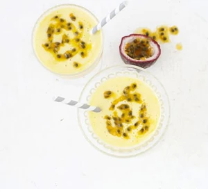

Mango & Passion Fruit Smoothie

Description
A tropical fruit blend to start the day the nutritious way - full of vitamin C and low in fat too.
Recipe
Ingredients
- 400g peeled and chopped ripe mango
- 2 x 125g pots fat-free mango yogurt
- 250ml skimmed milk
- 1 juiced lime
- 4 passion fruits, halved
Instructions
- Whizz the mango, yogurt and milk together in a blender until smooth. Stir in the lime juice, then pour into 4 glasses. Scoop the pulp of a passion fruit into each one, and swirl before serving.